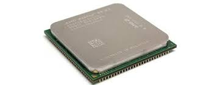
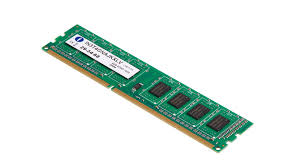
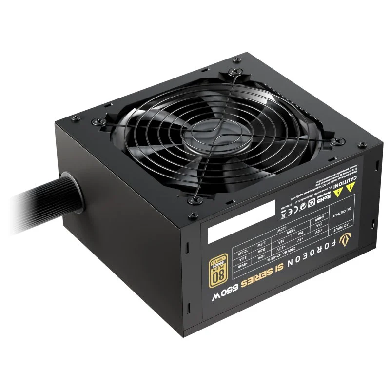
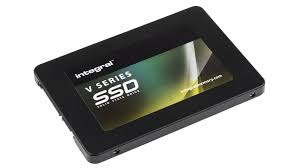
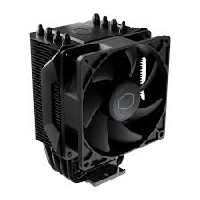
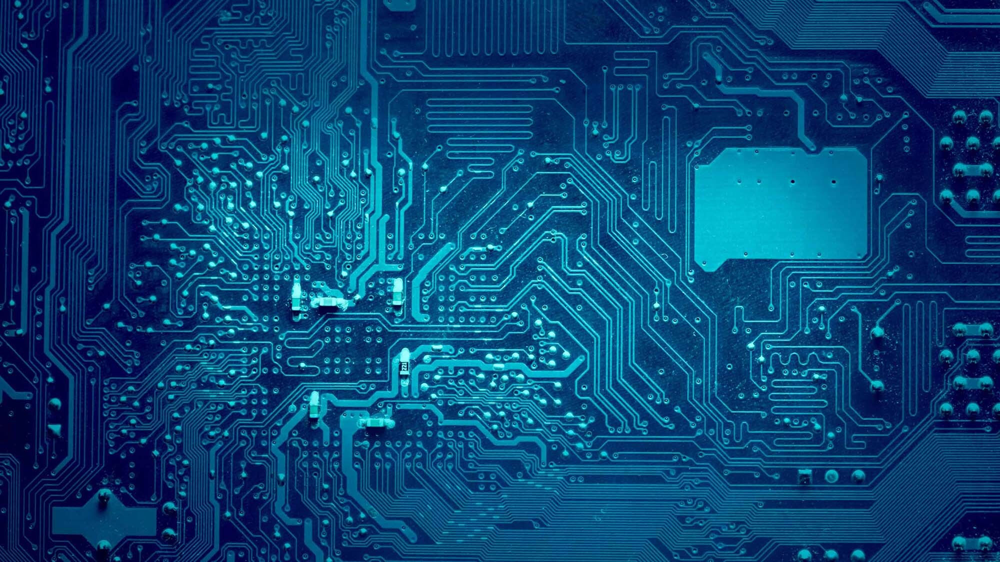

Components

CPU

RAM

GPU

Power Supply

SSD

Cooler

Software

Browser
Database
Firewall
Encryption
Learn the basics of computers

CPU

RAM
GPU

Power Supply

SSD

Cooler

Software
Browser
Database
Firewall
Encryption
Computers are electronic devices that process and store information. They are used in many areas of daily life, such as school, work, communication, and entertainment.
From smartphones to laptops, computers help people complete tasks quickly and efficiently.
Computers work by following instructions called programs. These programs tell the computer what to do.
The process happens in three main steps:
This cycle happens very fast, allowing computers to perform complex tasks in seconds.
Computers are essential tools in modern life. They help us work, learn, and communicate more efficiently. Understanding how they work helps us use them better.